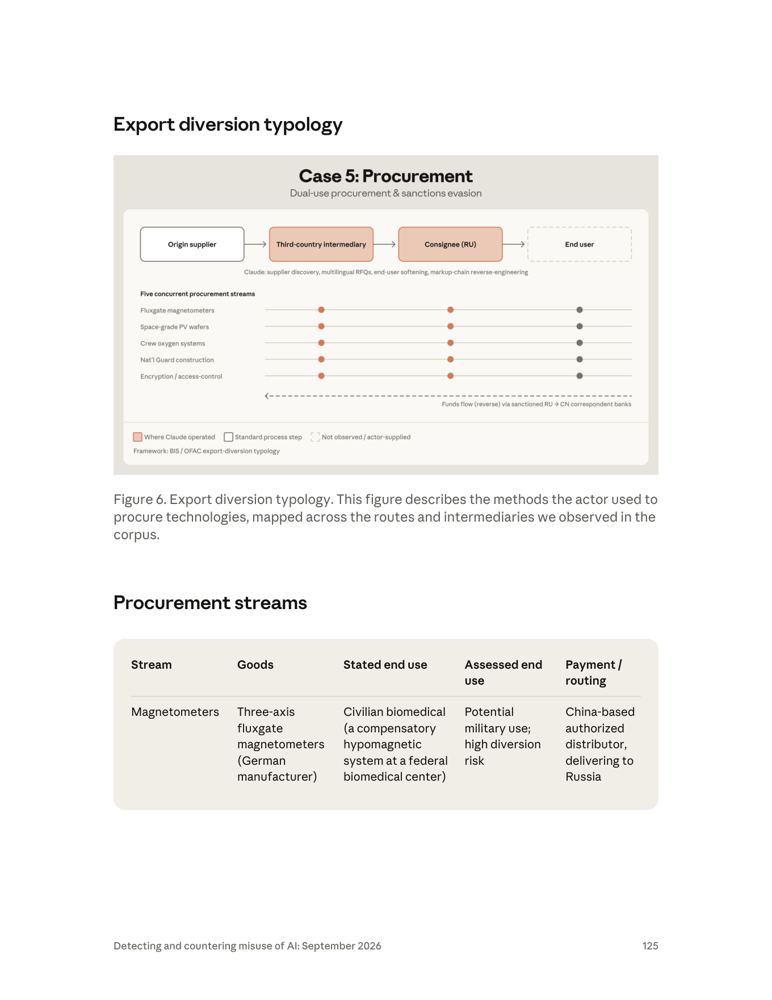

課程模組：04 常規武器（Conventional weapons）— Part II 情報蒐集與採購 ｜ 一手來源：PDF p.123–126（Figure 6 在 p.125；Procurement streams 表跨 p.125–126）｜ 整理日期：2026-09-13

| 線索類型 | 報告內容 | 頁碼 |
|---|---|---|
| 地理位置 | 「a Russia-based actor」 | p.123 |
| 自述身分 | 「a self-identified procurement manager at a Moscow design bureau」 | p.123 |
| 組織型態 | 「Moscow design bureau」（設計局）；行為者為其中的採購經理，並向「their director」提交俄文簡報 | p.123–124 |
| 語言 | 以英文、中文、俄文起草詢價信；以俄文寫給主管的簡報 | p.123–124 |
| 客戶關聯 | 「likely for Russian government and defense industry customers」；部分訂單「cited contracts and orders from Russian government and defense industry customers」；其他訂單「we could not confirm whether the end customers were affiliated with the Russian government or defense industry」 | p.123, p.124 |
| 明確的軍方客戶 | 「secured a contract to build a hospital for a Russian National Guard unit」 | p.123 |
| 國家採購平台 | 「information technology and encryption systems available through Russia's state platform for defense purchases」 | p.123 |
| 存取手法 | 「used VPNs to circumvent Anthropic's geographic access restrictions」 | p.124 |
| 帳號數 | 報告寫「we banned the account」（單數） | p.124 |
| 代號／handle | 報告未提供任何 handle、公司名、人名、設計局名稱 | — |
| 時間 | 報告未給本案的具體時間；僅知全報告涵蓋 2025-12 至 2026-08 | p.3 |
本案的歸因語言值得逐字拆解，因為它示範了情報寫作中「事實—自述—評估」三層分離：
報告在本案沒有使用「high confidence」「consistent with」等正式信度詞。對比同一模組的 GTG-27005（無人機蜂群案）用了「We assess the actors were a small, specialized freelance team ... not a Russian state entity」（p.117）並明講「we cannot verify those claims」（p.118），本案的措辭更謹慎：它把「是否為國家行為」留白，只說客戶「很可能」是政府與國防工業。
情報學上的差別（供課堂講解）：
| 措辭 | 意義 | 本案用法 |
|---|---|---|
| observed / identified | 直接觀察到的事實 | 對話內容、VPN、語言 |
| self-identified / claimed | 來源自述，未經驗證 | 採購經理身分、民用生醫用途 |
| likely / probable | 分析判斷，證據偏向但不排除其他解釋 | 客戶為政府／國防工業 |
| assessed | 綜合分析後的結論（通常附信度） | 表格 Assessed end use 欄 |
| consistent with | 與某已知模式相符，但不等於就是 | 本案未使用 |
| high / moderate / low confidence | 對評估的信心程度，取決於來源品質與佐證數量 | 本案未使用 |
| could not confirm | 誠實標註無法驗證的部分 | 部分訂單的最終客戶 |
教學重點：Anthropic 的歸因基礎是「行為者自己在對話裡說的話 + 文件內容 + 存取特徵」。這與網路攻擊案例（可用基礎設施、惡意程式碼重疊、TTP 相似度交叉驗證）不同——採購案的證據幾乎全是語料內容本身。這代表：(1) 行為者若說謊，歸因會被誤導；(2) 但行為者向主管寫的內部簡報（明講要規避歐洲管制）是「對己方誠實」的文件，證據價值遠高於對外的詢價信。這種「內部文件 vs. 對外文件」的證據分級，是本案最值得學的分析技巧之一。
俄語「конструкторское бюро」（КБ，設計局）是蘇聯／俄羅斯體制下負責武器系統或工業產品設計的機構，許多設計局隸屬國防工業集團（例如 KSE Institute 2025 年 7 月報告提到 Moscow 設有 MiG、Sukhoi 等設計局與發動機廠；見第 9 節）。報告沒有點名是哪一個設計局，也沒有說它是否為軍工設計局；「Moscow design bureau」只能推論「行為者在一個有工程設計功能的機構任職」，不能推論具體單位。Figure 6 表格中「a bureau test bench and possible airframe installation」（p.126，氧氣系統流）暗示該局有航空器測試台與機身安裝需求——這是推論，不是報告的結論。
本案沒有傳統意義的「受害者」（沒有被入侵的系統），但有三類被欺瞞的對象與被規避的制度：
| 節點 | 報告描述 | 所在頁 | 被欺瞞的方式 |
|---|---|---|---|
| 德國製造商（磁力計原廠） | 「German-made three-axis fluxgate magnetometers」 | p.123 | 原廠可能只看到中國授權經銷商的訂單，看不到俄國最終使用者 |
| 中國授權經銷商 | 「China-based authorized distributor, delivering to Russia」 | p.125 | 經銷商被要求出貨到俄羅斯；詢價信將買方包裝成「為某未具名研究機構做對外聯繫」 |
| 中國供應商（PV 晶圓） | 「through a China-based supplier」 | p.123 | 未聲明最終用途（表格 Stated end use 欄為「None stated」） |
| 中國航空供應商（氧氣系統） | 「China-based aviation suppliers」 | p.126 | 聲稱民用／運輸航空 |
| 香港中介 | 「a Hong Kong intermediary」 | p.123 | 作為灰色進口鏈中的一環 |
| 多國供應商 | 「supplier discovery across several countries」 | p.124 | 收到由 AI 起草的物流信件，包括「changing the recipient on an order described as already shipped」 |
| 制度 | 報告描述 | 頁碼 |
|---|---|---|
| 歐洲貿易管制 | 「explicitly described these efforts as a way to evade European trade controls. The briefings referenced the applicable European controls, acknowledged that direct supply was blocked」 | p.124 |
| 制裁下的支付管道 | 「Sanctioned Russian bank and a previously sanctioned Chinese bank」 | p.126 |
| Anthropic 的地區政策 | 「Supported Regions Policy」（俄羅斯為不支援地區） | p.124 |
| 流 | 物項 | 數量 | 來源國（依報告） |
|---|---|---|---|
| 磁力計 | 三軸磁通門磁力計 | 未載明 | 德國製造 |
| 光伏晶圓 | 太空級三接面（triple-junction）PV 晶圓 | 「several thousand」 | 經中國供應商 |
| 航空氧氣 | 機組氧氣系統與面罩（含備品），「Western analogues」 | 「for an aviation crew」 | 中國航空供應商 |
| 國民近衛軍建案 | 軍事單位醫院建築合約 | — | 俄國國內國家合約 |
| 國防訂單 IT | 加密模組、門禁、密碼軟體 | — | 俄國國家國防採購平台 |
具體受害數字：報告沒有提供任何交易金額、是否已完成交貨、或已出貨數量；唯一的量化數字是「several thousand」（PV 晶圓）與「roughly 40 line items per tender」（p.124）。報告從頭到尾沒有說任何一批貨已經送達俄羅斯——多數流的動詞是「sought to procure」（試圖採購），只有醫院建案是「secured a contract」（取得合約）。這是課堂上必須澄清的：本案證明的是「意圖與方法」，不是「既遂」。
本案沒有傳統的「Attack lifecycle」章節；報告以「五條工作流」與「Claude 的四種功能」呈現。以下依採購作業的自然順序重組，並標示自主程度。自主程度分級：A 對話式協助（人問 AI 答）／B 人類逐步指揮（AI 完成多步驟任務但每步由人下令）／C AI 編排多代理自主執行（AI 或代理框架自行跑完整流程）。
| 人類做什麼 | Claude 做什麼 | 自主程度 | 頁碼 |
|---|---|---|---|
| 用 VPN 繞過 Anthropic 的地理存取限制，建立帳號 | — | — | p.124 |
分析：報告說「Like those in other cases in this report, this actor used VPNs」——這是整份報告反覆出現的模式（影響力作戰章節 p.43「laundered their access to Claude itself through VPNs, foreign phone ...」、p.63 伊朗案「Access to Claude from within Iran is blocked, so they used VPNs」、常規武器章節 p.116、生物濫用章節 p.130 與 p.136、詐騙章節 p.139 均有類似敘述）。Supported Regions Policy 的執行依賴 IP 地理定位，VPN 使其形同虛設；真正的偵測必須來自內容與行為，而非來源 IP。
| 人類做什麼 | Claude 做什麼 | 自主程度 | 頁碼 |
|---|---|---|---|
| 指定要找的物項（德製磁力計、太空級 PV 晶圓、航空氧氣系統） | 「find third-country intermediaries in mainland China and Hong Kong that they could use to source European-made products」；「conduct supplier discovery across several countries」 | A → B | p.123, p.124 |
分析：這是最「平凡」的一步——任何採購人員都會問 AI「哪裡能買到某型號感測器」。偵測困境正是從這裡開始。但關鍵在於問法：「找第三國中介來取得歐洲製產品」本身就暗示直接管道不通。
| 人類做什麼 | Claude 做什麼 | 自主程度 | 頁碼 |
|---|---|---|---|
| 指定收件對象與要求的交貨地（俄羅斯） | 「draft email templates to request quotes in English, Chinese, and Russian」；信中「framed the buyer as working in foreign outreach for an unnamed research organization, while requesting that shipments be delivered to Russia」 | A | p.123 |
分析：Figure 6 把這個功能命名為「end-user softening」（最終使用者軟化）——用模糊、無害的措辭描述買方，讓供應商的合規審查無法觸發紅旗。這正對應 Tri-Seal Compliance Note 的紅旗「A customer's reluctance to share information about the end use of a product」（見第 6.3 節）。AI 在這裡的「加值」是：語言障礙消失。過去俄國採購者寫的中文或英文詢價信常有語言破綻（供應商的合規人員可以憑直覺察覺），現在三語信件都是母語級品質。
| 人類做什麼 | Claude 做什麼 | 自主程度 | 頁碼 |
|---|---|---|---|
| 要求設計把貨物繞經他國以掩蓋目的地的方案 | 「work out an import markup chain that would route goods through other countries to obscure their intended destination」 | B | p.123 |
| 要求解釋俄羅斯既有的灰色進口鏈 | 「reverse-engineer Russia's existing grey-import chain, explaining the path through an unauthorized Russian distributor, an import-export firm in China, and a Hong Kong intermediary」→「This gave the actor a complete breakdown of the costs and routing steps involved in keeping the procurement network hidden.」 | B | p.123–124 |
分析：這是本案最嚴重的 uplift。「Import markup chain」指的是貨物每經一個中介就加價一層的鏈條；設計這條鏈需要知道：哪些司法管轄區不執行對俄制裁、各層中介的合理加價幅度、哪一段需要更換文件、資金如何回流。這些知識過去屬於專業貿易顧問與有經驗的灰色進口商；報告說 Claude 給了行為者「完整的成本與路由步驟拆解」。這就是「營運知識的商品化」——第 10.1 節會展開。
| 人類做什麼 | Claude 做什麼 | 自主程度 | 頁碼 |
|---|---|---|---|
| 指示起草俄國政府標案規格 | 「draft formal Russian government tender specifications」 | A | p.123 |
分析：標案規格是採購鏈的「下游合法文件」——它讓俄國端的交易看起來是正常的政府採購。AI 起草規格書的能力對國防採購尤其有用：規格書需要精確的技術參數，而 Claude 能把「我要一個等同某西方型號的氧氣系統」轉成正式的規格條文。
| 人類做什麼 | Claude 做什麼 | 自主程度 | 頁碼 |
|---|---|---|---|
| 要求撰寫給主管的俄文簡報 | 「wrote Russian-language briefings to their director that explicitly described these efforts as a way to evade European trade controls. The briefings referenced the applicable European controls, acknowledged that direct supply was blocked, and outlined how the actor would route the goods to a Russian recipient through a third country, which the briefings described as a 'sanctions-neutral jurisdiction.'」 | A | p.124 |
分析：這份文件是本案的「自白書」。它證明：(1) 行為者知道適用的歐洲管制；(2) 知道直接供應被封鎖；(3) 刻意設計第三國路徑。從法律角度看，這是「knowing and willful」（明知故犯）的證據——在美國出口管制刑事案件中，這正是區分民事違規與刑事犯罪的關鍵要件。「Sanctions-neutral jurisdiction」這個委婉語本身就是一個可偵測的語言指標。
| 人類做什麼 | Claude 做什麼 | 自主程度 | 頁碼 |
|---|---|---|---|
| 搭建 Claude + 瀏覽器自動化代理的系統，設定目標市集與工具 | 「scraped vendor marketplaces for pricing information and provided links for roughly 40 line items per tender. The system merged multiple procurement spreadsheets and synced the final outputs into online note-taking, project management tool and other procurement tools—completely automating a workflow that would otherwise require extensive manual work by a procurement clerk.」 | C | p.124 |
分析：這是本案唯一達到「AI 編排自主執行」等級的部分。它證明代理式 AI 的 uplift 不限於網路攻擊——一個採購經理可以用同樣的架構把「查價、比價、造冊、同步」全自動化。從規模（scale）的角度看：每張標單 40 個品項 × 多張標單 × 多國供應商，這是一個人做不完的量。從偵測角度看：瀏覽器自動化代理的流量對供應商市集而言是爬蟲，有機會在市集端偵測（速率、行為模式）。
| 人類做什麼 | Claude 做什麼 | 自主程度 | 頁碼 |
|---|---|---|---|
| 指定要改變的收件人與訂單 | 「draft logistics correspondence to them, including changing the recipient on an order described as already shipped」 | A | p.124 |
分析：「已出貨後變更收件人」是 Tri-Seal 紅旗清單中的一項（「Last-minute changes to shipping instructions that appear contrary to customer history or business practices」）。這是一個對物流業者與貨代（freight forwarder）而言可以直接偵測的行為指標。
| 人類做什麼 | Claude 做什麼 | 自主程度 | 頁碼 |
|---|---|---|---|
| 安排以受制裁的俄國銀行與「曾受制裁的中國銀行」付款 | 報告未說明 Claude 在支付安排中的角色 | 未載明 | p.126；Figure 6 |
分析：Figure 6 底部的虛線箭頭「Funds flow (reverse) via sanctioned RU → CN correspondent banks」顯示資金逆向流動。報告沒有說 Claude 參與了支付路徑設計，只在表格與圖中記錄支付路由。這是誠實閱讀的重要一點：不要把表格內容當成「Claude 做的事」。
| 自主程度 | 本案對應階段 | 意義 |
|---|---|---|
| A 對話式協助 | 供應商發現（初期）、RFQ 起草、標案規格、主管簡報、物流信件 | 佔本案大部分；每一則都「看起來平凡」 |
| B 人類逐步指揮 | 加價鏈設計、灰色進口鏈逆向工程、跨國供應商發現 | 高 uplift 的知識轉移發生在這裡 |
| C AI 編排自主執行 | 瀏覽器自動化代理的採購後台 | 規模 uplift；證明代理式 AI 在非網攻場景同樣適用 |
本案是非網路攻擊案例，MITRE ATT&CK Enterprise 只有極少數技術勉強可對應。下表誠實標示框架缺口，並在後半段提出更合適的替代框架（BIS/OFAC 紅旗分類法、FATF 貿易型洗錢指標）。
| 戰術 | 技術 ID | 本案的具體作法 | 偵測構想 | 對應品質 |
|---|---|---|---|---|
| Resource Development | T1585 Establish Accounts | 在 Anthropic 平台建立帳號（被封後可能重建；Anthropic「deployed additional monitoring to detect attempts to create new accounts」p.124） | 帳號建立行為分析：裝置指紋、支付工具、電郵網域、與已封鎖帳號的關聯 | 中：ATT&CK 原意是在社群／服務建立假身分供攻擊用，此處是為了取得 AI 服務 |
| Defense Evasion（從服務供應商視角）/ Command and Control | T1090.002 Proxy: External Proxy；T1090.003 Multi-hop Proxy | 以 VPN 繞過 Supported Regions Policy（p.124） | 已知商業 VPN 出口節點清單、IP 與宣稱所在地不一致、時區／語言與 IP 不符 | 低：T1090 描述的是 C2 流量代理，此處是「存取地理繞道」 |
| Reconnaissance | T1593 Search Open Websites/Domains | 瀏覽器自動化代理爬取供應商市集報價（p.124） | 市集端的爬蟲偵測（速率、UA、行為序列） | 低：ATT&CK 的偵察對象是「受害者」，此處是「供應商」 |
| Reconnaissance | T1591 Gather Victim Org Information | 供應商發現、辨識中國／香港中介（p.123–124） | 無法在 AI 平台外偵測 | 低（類比） |
| 本案行為 | 頁碼 | 為何 ATT&CK 沒有對應 | 替代框架 |
|---|---|---|---|
| 多語詢價信起草＋最終使用者軟化 | p.123 | 這是商業文書行為，非資訊系統操作 | Tri-Seal 紅旗：「reluctance to share information about the end use」 |
| 進口加價鏈設計 | p.123 | 供應鏈路由設計無資安對應 | Tri-Seal：「Routing purchases through certain transshipment points」；FATF TBML：多層中介與異常加價 |
| 灰色進口鏈逆向工程 | p.123–124 | 知識查詢，非攻擊步驟 | 本講義提出的「採購規避鏈」（見 5.3） |
| 俄國政府標案規格起草 | p.123 | 合法文件產製 | — |
| 主管簡報（明講規避歐洲管制） | p.124 | 內部溝通 | 法律：「knowing and willful」證據 |
| 代理式採購後台（爬價、合併試算表、同步工具） | p.124 | ATT&CK 沒有「agentic orchestration」技術 ID；此為報告整體反覆指出的框架缺口 | Anthropic 的 uplift 三軸：speed / scale / depth（p.4） |
| 已出貨後變更收件人 | p.124 | 物流操作 | Tri-Seal：「Last-minute changes to shipping instructions」 |
| 以受制裁銀行付款 | p.126 | 金融操作 | 反洗錢／制裁篩查：代理行（correspondent banking）風險 |
為了讓學員有一個可以「逐階段偵測」的骨架，本講義把本案整理成一條七段的採購規避鏈，每段對應可偵測的一方：
| 段 | 行為 | 可偵測方 | 可觀察訊號 |
|---|---|---|---|
| 1 需求 | 軍工客戶提出需求（醫院、加密模組、氧氣系統） | 無（俄國國內） | — |
| 2 發現 | 找原廠、找中介、找替代品 | AI 平台、搜尋引擎、B2B 市集 | 查詢內容、爬蟲行為 |
| 3 接觸 | 三語 RFQ、模糊最終使用者 | 供應商／經銷商合規部門 | 紅旗：最終用途模糊、交貨地與買方不符 |
| 4 路由 | 第三國中介、加價鏈 | 貨代、海關、保險 | 不合理物流路徑、HS 碼與貨品不符、估價異常 |
| 5 文件 | 標案規格、最終用途聲明 | 出口許可審查機關 | 聲明與物項規格不相稱 |
| 6 支付 | 受制裁銀行→代理行 | 銀行、支付機構 | 制裁篩查、代理行盡職調查、資金來源與收貨地不符 |
| 7 交付與再出口 | 變更收件人、再出口至俄 | 物流業者、目的地海關 | 出貨後改收件人、目的地為已知轉運樞紐 |
Claude 在本案介入了第 2、3、4、5、7 段（依報告內容）；第 6 段報告未說明 Claude 角色。
本案頁段內有一張正式編號的圖（Figure 6，p.125）與一張跨頁表格（Procurement streams，p.125–126）。以下均以 Read 工具親自判讀頁面影像後撰寫。
圖片類型：流程／泳道式示意圖（supply-chain lane diagram），淺米色底的資訊圖卡，非截圖、非數據圖。
圖上實際看到的元素與文字（逐項抄錄）：
資料如何流動：貨物由左向右（原廠 → 第三國中介 → 俄國收貨人 → 最終使用者）；資金由右向左（俄國受制裁銀行 → 中國代理行 → 上游）。Claude 的介入集中在鏈的中段（中介與收貨人），這正是「掩蓋目的地」發生的位置——原廠端是標準商業流程（Claude 不需要介入），最終使用者端是行為者自己知道、Anthropic 在語料中觀察不到的。
這張圖傳達的核心訊息：
必須提醒學員的圖面限制（批判性閱讀）：
在課程中怎麼用這張圖：
p.125 的表格首列在下半；p.126 未存入 course/figures（該頁無正式編號圖表）。
圖片類型：五欄表格（Stream / Goods / Stated end use / Assessed end use / Payment / routing），淺米色底，跨兩頁。
完整抄錄：
| Stream | Goods | Stated end use | Assessed end use | Payment / routing |
|---|---|---|---|---|
| Magnetometers | Three-axis fluxgate magnetometers (German manufacturer) | Civilian biomedical (a compensatory hypomagnetic system at a federal biomedical center) | Potential military use; high diversion risk | China-based authorized distributor, delivering to Russia |
| Photovoltaic wafers | Several thousand space-grade triple-junction PV wafers | None stated | Likely defense or aerospace | Sanctioned Russian bank and a previously sanctioned Chinese bank |
| Aviation oxygen | Oxygen systems and masks for an aviation crew (plus spares), Western analogues | Civil / transport aviation, also a bureau test bench and possible airframe installation | Potential military use | China-based aviation suppliers |
| National Guard construction | Hospital construction contract for a National Guard military unit | Military | Military (unambiguous) | Domestic state contract |
| Defense order IT | Encryption modules, access control, and cryptographic software | Defense-industrial and state sector | Defense / state | Russia's state defense procurement platform |
繁中翻譯：
| 採購流 | 物項 | 聲稱的最終用途 | 評估的最終用途 | 支付／路由 |
|---|---|---|---|---|
| 磁力計 | 三軸磁通門磁力計（德國製造商） | 民用生醫（某聯邦生醫中心的補償式低磁場系統） | 潛在軍事用途；高轉移風險 | 中國授權經銷商，交貨至俄羅斯 |
| 光伏晶圓 | 數千片太空級三接面 PV 晶圓 | 未聲明 | 很可能為國防或航太 | 受制裁的俄國銀行與一家曾受制裁的中國銀行 |
| 航空氧氣 | 飛行機組氧氣系統與面罩（含備品），西方產品的同等品 | 民用／運輸航空，另有設計局測試台與可能的機身安裝 | 潛在軍事用途 | 中國航空供應商 |
| 國民近衛軍建案 | 國民近衛軍某軍事單位的醫院建築合約 | 軍事 | 軍事（無歧義） | 國內國家合約 |
| 國防訂單 IT | 加密模組、門禁、密碼軟體 | 國防工業與國家部門 | 國防／國家 | 俄國國家國防採購平台 |
這張表傳達的核心訊息與逐列分析：
（1）三軸磁通門磁力計（German manufacturer）
（2）太空級三接面 PV 晶圓（several thousand）
（3）機組氧氣系統與面罩（Western analogues）
（4）國民近衛軍醫院建案
（5）國防訂單 IT（加密模組、門禁、密碼軟體）
表格整體的教學價值：把「Stated end use」與「Assessed end use」並排，是出口合規訓練的經典格式——合規人員的工作就是評估兩欄之間的落差。本表可以直接改編成課堂練習（遮住第四欄，讓學員自己評估）。
Figure 6 註明框架來自 BIS / OFAC，但沒有給文件名。本講義取得美國商務部 BIS、財政部 OFAC 與司法部 DOJ 於 2023 年 3 月 2 日發布的《Tri-Seal Compliance Note: Cracking Down on Third-Party Intermediaries Used to Evade Russia-Related Sanctions and Export Controls》原始 PDF（來源：https://ofac.treasury.gov/media/931471/download ，共 6 頁），以下逐字抄錄其紅旗清單與規避手法清單，並與本案對照。這份對照表是本案作為「出口管制規避手法目錄」的實質內容。
| # | Tri-Seal 原文（2023-03-02，p.2–3） | 繁中 | 本案對應（頁碼） |
|---|---|---|---|
| 1 | Use of corporate vehicles (i.e., legal entities, such as shell companies, and legal arrangements) to obscure (i) ownership, (ii) source of funds, or (iii) countries involved, particularly sanctioned jurisdictions | 利用公司載體（空殼公司、法律安排）掩蓋所有權、資金來源或涉及的國家（尤其是受制裁管轄區） | 「import markup chain that would route goods through other countries to obscure their intended destination」（p.123）；「sanctions-neutral jurisdiction」（p.124） |
| 2 | A customer's reluctance to share information about the end use of a product, including reluctance to complete an end-user form | 客戶不願提供最終用途資訊、不願填最終使用者表格 | 詢價信「deliberately obfuscated the intended end users」（p.123）；PV 晶圓「None stated」（p.126）；Figure 6「end-user softening」 |
| 3 | Use of shell companies to conduct international wire transfers, often involving financial institutions in jurisdictions distinct from company registration | 以空殼公司進行國際電匯，涉及與公司註冊地不同管轄區的金融機構 | 「Sanctioned Russian bank and a previously sanctioned Chinese bank」（p.126）；Figure 6 資金逆向流 |
| 4 | Declining customary installation, training, or maintenance of the purchased item(s) | 拒絕慣常的安裝、訓練或維護服務 | 報告未提及 |
| 5 | IP addresses that do not correspond to a customer's reported location data | IP 位址與客戶申報所在地不符 | 行為者對 Anthropic 使用 VPN（p.124）——同一紅旗在 AI 平台層面成立 |
| 6 | Last-minute changes to shipping instructions that appear contrary to customer history or business practices | 臨時變更出貨指示、與客戶歷史或商業慣例不符 | 「changing the recipient on an order described as already shipped」（p.124） |
| 7 | Payment coming from a third-party country or business not listed on the End-User Statement or other applicable end-user form | 付款來自最終使用者聲明中未列的第三國或企業 | 資金經受制裁俄國銀行→中國代理行（Figure 6；p.126） |
| 8 | Use of personal email accounts instead of company email addresses | 使用個人電郵而非公司電郵 | 報告未提及 |
| 9 | Operation of complex and/or international businesses using residential addresses or addresses common to multiple closely-held corporate entities | 複雜／跨國業務使用住宅地址或多家關係企業共用地址 | 報告未提及 |
| 10 | Changes to standard letters of engagement that obscure the ultimate customer | 修改標準委任函以掩蓋最終客戶 | 詢價信將買方包裝為「working in foreign outreach for an unnamed research organization」（p.123） |
| 11 | Transactions involving a change in shipments or payments that were previously scheduled for Russia or Belarus | 原定運往俄羅斯／白俄羅斯的出貨或付款發生變更 | 報告未提及 |
| 12 | Transactions involving entities with little or no web presence | 交易對手幾乎沒有網路足跡 | 報告未提及 |
| 13 | Routing purchases through certain transshipment points commonly used to illegally redirect restricted items to Russia or Belarus. Such locations may include China (including Hong Kong and Macau) and jurisdictions close to Russia, including Armenia, Turkey, and Uzbekistan | 經由常用於非法轉運至俄／白俄的轉運點採購，例如中國（含香港、澳門）及亞美尼亞、土耳其、烏茲別克 | 「third-country intermediaries in mainland China and Hong Kong」（p.123）；「an import-export firm in China, and a Hong Kong intermediary」（p.123） |
對照結論：13 項紅旗中，本案在報告文字中可對應的有 8 項——其中 5 項為直接對應（#1 掩蓋涉及國家、#2 模糊最終用途、#6 出貨後改收件人、#10 掩蓋最終客戶、#13 經中國／香港轉運），3 項為近似對應（#3 與 #7 涉及受制裁銀行的支付路由，但報告未說是否透過空殼公司或未列於聲明的付款方；#5 的 IP 不符發生在 AI 平台層而非供應商層）。這意味著：如果原廠、經銷商、貨代或銀行任何一方認真執行 Tri-Seal 的紅旗檢查，本案在多個節點都有機會被攔下。AI 的 uplift 在於把紅旗 #2 與 #10（文件層面的掩飾）做得更精緻，但對 #7、#13（資金與路由層面）幾乎沒有幫助——這是第 10.4 節「合規方如何用結構性訊號對抗 AI 強化的文件性掩飾」的立論基礎。
Tri-Seal 從美國司法部兩件起訴書（United States v. Orekhov, E.D.N.Y. 2022；United States v. Grinin, E.D.N.Y. 2022）整理出的手法（p.5）：
| # | 原文 | 繁中 | 本案對應 |
|---|---|---|---|
| a | Claiming that shell companies located in third countries were intermediaries or end users; in one case, DOJ alleges that only one of the five intermediary parties had any visible signage and consisted of an empty room in a strip mall | 聲稱第三國空殼公司是中介或最終使用者（某案五家中介只有一家有招牌，且只是商場裡的空房間） | 第三國中介（p.123）；報告未證實是否為空殼 |
| b | Claiming that certain items would be used by entities engaged in activities subject to less stringent oversight; on at least one occasion, a defendant allegedly claimed that an item would be used by Russian space program entities, when in fact the item was suitable for military aircraft or missile systems only | 聲稱物項將用於監管較寬鬆的活動（例如聲稱給俄國太空計畫，實際只適用軍機或飛彈） | 磁力計「civilian biomedical」說法（p.123, p.125）——結構完全相同 |
| c | Dividing shipments of controlled items into multiple, smaller shipments to try to avoid law enforcement detection | 拆分受管制物項為多批小量出貨 | 報告未提及 |
| d | Using aliases for the identities of the intermediaries and end users | 中介與最終使用者使用化名 | 「unnamed research organization」（p.123）——部分對應 |
| e | Transferring funds from shell companies in foreign jurisdictions into U.S. bank accounts and quickly forwarding or distributing funds to obfuscate the audit trail or the foreign source of the money | 資金從外國空殼公司匯入後迅速轉出以模糊稽核軌跡 | 報告未提及 |
| f | Making false or misleading statements on shipping forms, including underestimating the purchase price of merchandise by more than five times the actual amount | 出貨文件不實陳述，包括低報價格達五倍以上 | 報告未提及 |
| g | Claiming to do business not on behalf of a restricted end user but rather on behalf of a U.S.-based shell company | 聲稱代表美國空殼公司而非受限最終使用者 | 「framed the buyer as working in foreign outreach for an unnamed research organization」（p.123）——結構相同 |
以下把任務簡報要求的六種典型手法、Tri-Seal 的分類、與本案證據三方對照：
| 已知手法 | Tri-Seal 對應 | 本案是否觀察到 | 頁碼 |
|---|---|---|---|
| 空殼公司（shell company） | 紅旗 #1、#3、#9、#12；手法 a | 報告未明說中介是空殼；只說「third-country intermediaries」 | p.123 |
| 第三國中介（third-country intermediary） | 紅旗 #13；手法 a | 是：中國大陸、香港 | p.123 |
| 最終用途證明造假（false end-use certification） | 紅旗 #2、#10；手法 b、g | 是（軟化與掩飾）：民用生醫、未具名研究機構；報告未說是否偽造正式證明文件 | p.123, p.125 |
| 物項拆分（splitting shipments） | 手法 c | 報告未提及 | — |
| HS 碼錯報（misdeclared HS code） | 手法 f（廣義） | 報告未提及 | — |
| 代理採購人（procurement agent） | Tri-Seal 整體主題 | 是：行為者本人即是「為俄國政府與國防工業客戶採購」的代理人 | p.123–124 |
教學提醒：本案證據集中在「文件與路由」層面的手法，「物流與海關」層面（拆分、HS 碼）的手法在報告中缺席——這不代表行為者沒做，只代表 Anthropic 從對話語料看不到。AI 平台的可見範圍有其邊界：它看得到人「想」什麼、「寫」什麼，看不到貨「怎麼走」。
報告對本案沒有提供任何 IOC 表——沒有網域、IP、電郵、Telegram 帳號、雜湊值、公司名或人名。這與網攻案例（例如 GTG-20006 的植入程式家族、GTG-04001 的 Telegram 頻道與網域）形成強烈對比。
原因分析（供課堂討論）：
| 指標類型 | 具體內容 | 可用方 | 偵測價值 | 壽命 |
|---|---|---|---|---|
| 語言指標 | 同一帳號／使用者在短期內以英、中、俄三語起草針對同一物項的詢價信 | AI 平台 | 高（三語 RFQ 的組合在合法商務中少見） | 長（行為模式，不隨帳號更換失效） |
| 詞彙指標 | 「sanctions-neutral jurisdiction」及其俄文／中文對應語；「grey import」「parallel import」「markup chain」與具體物項並用 | AI 平台、電郵閘道 | 中（可能出現在合規研究中） | 中 |
| 實體指標 | 對話中出現受制裁銀行名稱 + 交貨地俄羅斯 + 第三國中介 | AI 平台、銀行 | 高 | 長 |
| 路由指標 | 「德國製 → 中國授權經銷商 → 俄羅斯」的三段式路由 | 原廠、經銷商、貨代 | 高 | 長（結構性） |
| 物流指標 | 已出貨後要求變更收件人 | 貨代、物流平台 | 高 | 長 |
| 存取指標 | 商業 VPN 出口 + 俄文介面／俄文內容 + 宣稱非俄地區 | AI 平台 | 中（VPN 使用普遍） | 短 |
| 自動化指標 | 瀏覽器自動化代理對 B2B 市集的高頻查價 | B2B 市集 | 中 | 短（工具易變） |
| 文件指標 | 最終用途聲明的技術可信度高，但與採購數量／規格不相稱（例如「生醫研究」卻要求軍規溫度範圍、「數千片」太空級晶圓） | 出口許可審查、原廠合規 | 高 | 長 |
「When we detected the actor's violation of our Usage Policy and Supported Regions Policy, we banned the account, deployed additional monitoring to detect attempts to create new accounts, and incorporated our investigative findings in our safeguards.」
拆解：
| 動作 | 意義 | 效力評估 |
|---|---|---|
| 偵測到違反 Usage Policy 與 Supported Regions Policy | 兩條政策並列：內容違規（武器相關採購）＋地區違規（俄羅斯） | 報告沒有說哪一條先觸發；「Identifying and preventing weapons-related procurement activity is particularly challenging」暗示內容偵測不易，地區違規可能是較早的訊號 |
| 封鎖帳號（單數） | 一個帳號承載整個五流採購作業 | 對比 GTG-27005 的九個帳號，本案的行為者集中在單一帳號，封鎖的效果較直接；但重建帳號的成本極低 |
| 部署新帳號偵測 | 針對「同一行為者重新註冊」 | 這是承認「封鎖不是終點」；效力取決於裝置／支付／行為指紋的品質 |
| 納入防護 | 調查發現→分類器或規則 | 報告未說明具體是什麼 |
章節層級的補充（p.111–112）：Anthropic 對常規武器案件的通用作法是「ban accounts violating our policies, incorporate investigative findings into our safeguards to prevent future misuse, and provide information to public- and private-sector partners」（p.111），並「recently launched a new set of classifiers designed to better detect and block traffic related to high-yield explosives and weapons development」（p.112）。注意：新分類器針對的是「爆裂物與武器開發」，不是「採購規避」——報告沒有說有針對採購行為的專用分類器。
「Identifying and preventing weapons-related procurement activity is particularly challenging, because each of the actor's requests (commercial quote requests, tender documents, and supplier lookups) seem individually mundane.」
這句話是本案在偵測工程上的核心命題。拆解成三個層次：
| 缺口 | 證據 | 課堂討論價值 |
|---|---|---|
| 地區限制依賴 IP | 「used VPNs to circumvent Anthropic's geographic access restrictions」（p.124） | VPN 是所有俄／伊朗案例的共通手法；地區政策若無內容層面的佐證，等於沒有 |
| 單則請求的平凡性 | p.124 原文 | 需要帳號層行為分析（類比銀行的交易監控） |
| 偵測時點未知 | 報告未說何時偵測到、行為者活動持續多久、是否有任何一批貨已出 | 「disrupted」的實際效果無法評估 |
| 新分類器不對應本案 | p.112 的新分類器針對爆裂物與武器開發 | 採購規避需要不同的偵測邏輯（實體、路由、資金） |
| 與出口管制機關的資訊分享 | p.111 只說「public- and private-sector partners」，本案段落未提是否通報 BIS／OFAC／EU 或德國原廠 | AI 供應商是否應有類似金融機構的「可疑活動報告」義務？（第 10.2 討論題） |
| 未經驗證的最終客戶 | 「For others, we could not confirm whether the end customers were affiliated with the Russian government or defense industry」（p.124） | 誠實，但也代表 Anthropic 的處置是基於「部分已證實 + 部分推定」 |
| 代理式後台的可見性 | 瀏覽器自動化代理的操作若透過 API 或第三方框架執行，Anthropic 只看得到模型呼叫，看不到代理在市集上的行為 | 代理框架的責任邊界 |
| 來源 | URL | 日期 | 內容 | 性質 |
|---|---|---|---|---|
| Cyber Kendra「Anthropic Threat Report 2026: Every Case Explained」 | https://www.cyberkendra.com/2026/09/anthropic-threat-report-says-ai-now.html | 2026-09 | 完整複述本案：莫斯科設計局採購經理、五條工作流、德製磁力計、太空級 PV 晶圓、機組氧氣、中國／香港中介、三語 RFQ、加價鏈、灰色進口鏈逆向工程 | 僅引述 Anthropic；明確表示「The named organizations have not publicly confirmed these allegations」 |
| DEV Community「The Anthropic Threat Report Autopsy」（A. F. Sadek） | https://dev.to/socialawy/the-anthropic-threat-report-autopsy-what-154-pages-of-misuse-actually-reveal-57b1 | 2026-09-12 | 在 Section 5 與 Table 3 引用本案（pp.123–125）：「procurement of German magnetometers via China as circumventing European export controls ... 'sanctions-neutral jurisdiction'」 | 僅引述 Anthropic，無獨立分析 |
| 聯合新聞網（中央社／舊金山綜合外電）「俄中盯上Claude模型 Anthropic瓦解多起AI攻擊」 | https://udn.com/news/story/6811/9747890 | 2026-09-11 | 未提及本案；俄羅斯部分只提 Midnight Blizzard 相關的網攻案 | 僅引述 Anthropic |
| Newtalk「Claude遭濫用！中國監控台灣政要、模擬12軍事目標」（記者彭心慈） | https://newtalk.tw/news/view/2026-09-12/1059323 | 2026-09-12 | 未提及本案；聚焦中國監控台灣政要與電戰模擬 | 僅引述 Anthropic 與路透 |
| unwire.hk「Anthropic 揭 7 大 Claude 濫用類別」 | https://unwire.hk/2026/09/12/anthropic-claude-threat-intelligence-report-2026/ai/ | 2026-09-12 | 未提及本案；俄羅斯案例只提 GTG-20006、無人機蜂群、蒸餾案中外洩的俄國國防部憑證 | 僅引述 Anthropic |
| AI Post Hub「Anthropic 威脅情報報告重磅解析」 | https://www.aiposthub.com/anthropic-threat-intelligence-report-september-2026-china-distillation-deepseek-qwen-taiwan-electronic-warfare-deep-dive/ | 2026-09-10 | 未提及本案 | 僅引述 Anthropic |
| 路透社通稿（經 US News、Rappler 轉載） | https://www.usnews.com/news/world/articles/2026-09-10/anthropic-disrupts-russian-chinese-ai-campaigns-targeting-its-claude-models ；https://www.rappler.com/technology/anthropic-threat-intelligence-report-september-2026/ | 2026-09-10 | 抓取失敗（逾時／403），無法確認是否提及本案 | 未能驗證 |
結論：本案是單一來源情報（single-source intelligence）。所有第三方報導均轉述 Anthropic 報告，沒有任何一家媒體、政府機關、原廠或經銷商獨立證實本案的存在或細節。台灣與香港中文媒體的報導完全沒有涵蓋本案——它們的注意力集中在對台電戰模擬（GTG-17002）與中國蒸餾案。這本身是一個教學點：對台灣最有實務意義的案例，反而是台灣媒體最沒報導的案例。
| 來源 | URL | 日期 | 本講義引用的內容 | 性質 |
|---|---|---|---|---|
| 美國 BIS／OFAC／DOJ《Tri-Seal Compliance Note: Cracking Down on Third-Party Intermediaries Used to Evade Russia-Related Sanctions and Export Controls》 | https://ofac.treasury.gov/media/931471/download | 2023-03-02 | 第 6.3 節全文抄錄的 13 項紅旗、7 項刑事手法、轉運點清單（中國含港澳、亞美尼亞、土耳其、烏茲別克）、Milandr 案、Vorago 案（$497,000 罰款） | 獨立一手（政府文件） |
| 美國 BIS Common High Priority Items List（CHPL） | https://www.bis.gov/licensing/country-guidance/common-high-priority-items-list-chpl | 更新 2024-02-23（頁面所載） | 50 個六位 HS 碼；四層（Tier 1：8542.31/32/33/39 積體電路；Tier 2：8517.62、8526.91、8532.21、8532.24、8548.00；Tier 3A 電子、3B 機械含軸承與光學；4A 製造測試設備、4B CNC 工具機）；與 EU、日本、英國協調 | 獨立一手（政府文件） |
| Baker McKenzie「Sanctions Enforcement Around the World: US, UK, EU, and Japan Coordinate on Updated Common High-Priority Items Lists」 | https://sanctionsnews.bakermckenzie.com/sanctions-enforcement-around-the-world-updated-common-high-priority-items-lists/ | 2023-09-27 | 2023 年 9 月四方同步更新，新增 7 個 HS 碼（含重型車輛軸承、導航天線），Tier 3 拆為 3A/3B | 獨立（律師事務所評析） |
| Baker McKenzie「BIS, DOJ, and OFAC Publish Compliance Note」 | https://sanctionsnews.bakermckenzie.com/bis-doj-and-ofac-publish-compliance-note-warning-public-of-russian-evasions-of-export-controls-and-sanctions/ | 2023-03 | Tri-Seal 摘要 | 獨立 |
| Norton Rose Fulbright「US agencies release tri-seal sanctions and export control anti-evasion guidance」 | https://www.nortonrosefulbright.com/en/knowledge/publications/41d9e975/us-agencies-release-tri-seal-sanctions-and-export-control-anti-evasion-guidance | 2023-03 | 13 項紅旗的律師事務所整理 | 獨立 |
| KSE Institute《Russian CHP Imports Tracker Q2 2026》（Lucas Risinger, Benjamin Hilgenstock） | https://sanctions.kse.ua/wp-content/uploads/2026/07/CHP-Q2-2026-Report.pdf | 2026-07 | 「China now accounts for approximately 75% of reported CHP exports to Russia」；俄國 CHP 進口總值「fallen by more than half」；中國占比從戰前 ~25–30% 升至 75–85%；854231／854239（處理器與其他 IC）「it was Hong Kong that subsumed coalition volumes ... could signal that coalition-made products still make up the bulk of the volumes ending up in Russia, merely routed through Hong Kong」；俄國向中國支付的 CHP 溢價 2025 年達 ~300%；Tier 4.B CNC 工具機是唯一進口增加的層級；台灣被列為「sanctions coalition」成員，且「South Korea and Taiwan ... continued to report meaningful CHP exports until early 2023, each eventually curbed direct flows」；資料來源含台灣海關 | 獨立研究（一手數據分析） |
| KSE Institute《Disassembling the Russian War Machine: Logistics, Chokepoints, and Dependencies》 | https://sanctions.kse.ua/wp-content/uploads/2025/07/KSEInstitute_RussianMIC_2.pdf | 2025-07 | 「Just a handful of logistics firms and hubs facilitate the majority of these imports, serving as intermediaries between Chinese firms and the Russian MIC」；海參崴港 98% 進口來自中國；Votkinsk 飛彈廠產量「partially aided by imported components from China and Taiwan」（p.54）；Moscow 設有 MiG、Sukhoi 等設計局 | 獨立研究 |
| RUSI《Illuminating the Role of Third-Country Jurisdictions in Sanctions Evasion and Avoidance (SEA)》（O'Shea, Allison, Saiz, Hack） | https://www.rusi.org/explore-our-research/publications/external-publications/illuminating-role-third-country-jurisdictions-sanctions-evasion-and-avoidance-sea | 2023-10 | 檢視 13 個第三國：Armenia, Cyprus, Czechia, Georgia, Indonesia, Kazakhstan, Malta, Saudi Arabia, Serbia, South Africa, Spain, Türkiye, UAE；資料期間 2022-02 至 2023-02 | 獨立研究 |
| RUSI《Silicon Lifeline: Western Electronics at the Heart of Russia's War Machine》 | https://www.rusi.org/explore-our-research/publications/special-resources/silicon-lifeline-western-electronics-heart-russias-war-machine | 2022-08 | 27 套俄國系統中發現 450+ 外國元件；供應鏈「running from the US, through the UK, the Netherlands, Germany, Switzerland, and France, to Taiwan, South Korea, and Japan」；印度公司經 King-Pai Technology (HK) 轉售 Infineon 晶片給俄國公司的案例 | 獨立研究 |
| Sayari「Russian Sanctions Evasion」 | https://sayari.com/resources/blog/russian-sanctions-evasion/ | 2026-04-01 | 香港三層中介持股 30–40% 掩蓋俄籍受益人；「Turkey, the UAE, Armenia, Georgia, and Kazakhstan became primary corridors for dual-use goods entering Russia」；「SDN screening sees only the Turkish company」 | 獨立（商業情資公司，有產品利益） |
| Wikipedia「Wassenaar Arrangement」 | https://en.wikipedia.org/wiki/Wassenaar_Arrangement | 查閱 2026-09-13 | 1996-07-12 成立、42 個參與國、俄羅斯為參與國、兩份清單（Dual-Use 10 類、Munitions 22 類）、共識決；2022–2023 年多項修訂提案因俄羅斯反對「were not accepted」，多國改採單邊管制 | 二手（維基百科），需核對 |
| EUR-Lex Council Regulation (EU) No 833/2014 合併版本 | https://eur-lex.europa.eu/legal-content/EN/TXT/?uri=CELEX:02014R0833-20240625 | 合併至 2024-06-25 | 第 2(1) 條禁止對俄出口 Reg. 2021/821 附件一軍民兩用物項；第 2a(1) 條禁止附件 VII 物項；第 3c 條限制附件 XI 航空與太空產業貨品 | 獨立一手（法規） |
| 全國法規資料庫《戰略性高科技貨品輸出入管理辦法》 | https://law.moj.gov.tw/LawClass/LawAll.aspx?pcode=J0090013 | 最新修正 2023-10-31 | 第 15 條（輸出許可證效期 6 個月，符合條件至 2 年）、第 15-1 條（內部管控出口人制度，3 年效期）、第 16 條（進口國政府核發之國際進口證明書或最終用途證明書或保證文件，或外國進口人或最終使用人出具之最終用途保證書）、第 21 條（文件保存 5 年） | 獨立一手（法規） |
| 經濟部國際貿易署「高科技貨品管理」 | https://www.trade.gov.tw/Pages/List.aspx?nodeID=4353 | 查閱 2026-09-13 | 「部分貨品除了具有一般商業用途外亦可供軍事使用，我國為善盡國際責任及保護我商出口利益，爰建立戰略性高科技貨品管理制度。」 | 獨立一手（政府） |
| Euromaidan Press「Taiwan completely halts machine tool exports to Russia amid tighter controls, ministry says」 | https://euromaidanpress.com/2024/11/03/taiwan-completely-halts-machine-tool-exports-to-russia-amid-tighter-controls-ministry-says/ | 2024-11-03 | 經濟部宣布可用於軍工的工具機對俄出口「dropped to zero」；對俄／白俄首次違規罰款提高至新台幣 100 萬元；引述 2024 年 1 月 The Insider 與《報導者》聯合調查（台灣成為俄國軍工 CNC 工具機主要來源，經土耳其轉運）及 2024 年 7 月 The Insider 對 Giant Force 經中國工廠、馬來西亞與吉爾吉斯中介規避的報導 | 獨立報導（烏克蘭媒體，立場明確） |
查詢入口：https://news.google.com/rss/search?q=Taiwan+export+controls+Russia+machine+tools 與 https://news.google.com/rss/search?q=國貿署+俄羅斯+出口管制+高科技貨品、https://news.google.com/rss/search?q=Russia+sanctions+evasion+Hong+Kong+intermediaries+dual-use+2026
| 標題 | 來源 | 日期 |
|---|---|---|
| Taiwan tightens Russia export curbs, details tech rules | Reuters | 2022-04-06 |
| Taiwan expands the list of export control items to Russia and Belarus | Global Sanctions and Export Controls Blog | 2023-01-13 |
| 台灣工具機流入俄羅斯軍工業和核子物理研究所 | 報導者 | 2024-01-23 |
| Taiwan has become the Russian arms industry's main source for high precision machine tools | The Insider (theins.press) | 2024-01-26 |
| Precision equipment for Russian arms makers came from U.S.-allied Taiwan | The Washington Post | 2024-02-01 |
| Taiwan tightens export controls after report of Russian arms use | Taipei Times | 2024-02-03 |
| Taiwan's government sanctions Russian company following The Insider's exposé | The Insider | 2024-02-04 |
| Taiwan expands list of export control items to Russia and Belarus | Taipei Times | 2024-02-08 |
| Taiwan to restrict exports of nitrocellulose to Russia, Belarus | Taipei Times | 2024-06-07 |
| MOEA expands list of export control items for Russia and Belarus | moea.gov.tw | 2024-11-08 |
| 經濟部更新601個「戰略性高科技貨品出口實體管理名單」 | 北美智權 | 2025-06-16 |
| Taiwan to further tighten export controls for dual-use technology | Reuters | 2025-11-17 |
| Taiwan offers talks with Ukraine on weapons sanctions-busting | Reuters | 2026-01-22 |
| Hong Kong firms feed European tech to Russia's war in Ukraine, report says | ICIJ | 2026-02-18 |
| This is the hidden supply chain powering Russia's war with European tech | Follow the Money | 2026-02-18 |
| Export bans that weren't really bans: How Russia kept importing military goods | CEPR (VoxEU) | 2026-02-24 |
| Russian Sanctions Compliance in 2025: Detecting Evasion Networks | Kharon | 2026-02-27 |
| Hong Kong's complex role in bypassing sanctions against Russia | Le Monde | 2026-03-13 |
| China sells 62% of Russia's weapons-making machines. EU sanctions target Kyrgyzstan | Euromaidan Press | 2026-03-19 |
| 台灣跟進美國 俄石油雙巨頭納管制清單 | 自由財經 | 2026-04-01 |
| Transatlantic Action: Sanctioning Third-Country Enablers of Russia's War Economy | CEPA | 2026-04-23 |
| European Union Sanctions 60 Third-Country Entities Over Russia Tech Access, Targets Hong Kong Firms | Vision Times | 2026-04-29 |
| 邊境全面攔查！戰略性高科技貨品名單增列265項 | 鉅亨網 | 2026-06-09 |
| 戰略性高科技貨品出口管制清單 增265個涉武擴實體 | 經濟日報 | 2026-06-09 |
| Beyond the "no-Russia" clause: Kyrgyzstan becomes the first test case for the EU's anti-circumvention tool | Norton Rose Fulbright | 2026-06-15 |
| EU Citizen's Company Sent Sanctioned Equipment to Russian Defense Firms | OCCRP | 2026-06-19 |
| Austria Exposes Covert Network Supplying Russian Arms Industry | Fincrime Central | 2026-08-13 |
| Russia's New Jet-Powered Drones Hitting Ukraine Packed With Nearly 100 Foreign Components | UNITED24 Media | 2026-09-10 |
這些標題的存在證明：本案描述的手法（香港中介、第三國轉運、歐洲技術流入俄國軍工）在 2024–2026 年有大量獨立調查報導佐證——Anthropic 的個案是單一來源，但它所描述的「模式」有充分的外部驗證。這是情報分析中「個案未證實、模式已證實」的典型情境。
Wassenaar Arrangement（瓦聖納協定）：1996 年成立，42 個參與國，維護兩份清單（軍民兩用物項與技術清單 10 大類；軍品清單 22 類），以共識決更新。俄羅斯是參與國——這是本案最諷刺的制度背景：制裁規避者所屬的國家，本身坐在管制清單的談判桌上，且自 2022 年起以反對票阻擋清單更新，迫使美國、荷蘭等國改採單邊或小多邊管制（來源：Wikipedia，需核對）。台灣不是參與國，但台灣的 SHTC 清單實質上採納 Wassenaar 等四大建制的清單內容（依國貿署制度說明與 KSE 對台灣「sanctions coalition」身分的認定）。
美國 EAR 與 Entity List：出口管理條例（EAR）由 BIS 執行，以 ECCN 分類管制物項；Entity List 列出受限的最終使用者；2022 年起對俄羅斯／白俄羅斯增設全面性管制與外國直接產品規則（FDPR）。CHPL（50 個 HS 碼、四層）是與 EU、日本、英國共同維護的「俄國最想要的物項」清單，作為企業盡職調查的優先對象。Tri-Seal Compliance Note 是三部門對「第三方中介」的聯合警示。
歐盟制裁：Council Regulation (EU) No 833/2014 第 2 條禁止對俄出口 Reg. 2021/821 附件一所有軍民兩用物項；第 2a 條禁止附件 VII 先進技術物項；第 3c 條限制附件 XI 航空與太空產業貨品（以上經 EUR-Lex 確認）。第 12g 條「No Russia clause」（作者背景知識：由 2023 年 12 月第 12 輪制裁引入，要求出口商在對第三國銷售特定物項的合約中納入禁止再出口至俄羅斯的條款）——請以 EUR-Lex 最新合併版本核對。
台灣戰略性高科技貨品（SHTC）出口管制：法源為《貿易法》第 13 條與《戰略性高科技貨品輸出入管理辦法》（最新修正 2023-10-31）；主管機關經濟部，執行機關國際貿易署。制度要件（經全國法規資料庫確認）：輸出許可證（第 15 條）、內部管控出口人／ICP 制度（第 15-1 條）、進口國國際進口證明書或最終用途證明書或最終用途保證書（第 16 條）、文件保存 5 年（第 21 條）。2022 年起台灣加入對俄／白俄的出口管制，並多次擴大清單（2023-01、2024-02、2024-06 硝化纖維、2024-11 工具機、2025-11 再度收緊、2026-04 納入俄國石油巨頭、2026-06 實體名單增列 265 項——依第 9.3 節報導標題，細節未能直接驗證）。
要點一：AI 把「制裁規避的營運知識」商品化
報告原文：「They also had Claude reverse-engineer Russia's existing grey-import chain, explaining the path through an unauthorized Russian distributor, an import-export firm in China, and a Hong Kong intermediary. This gave the actor a complete breakdown of the costs and routing steps involved in keeping the procurement network hidden.」（p.123–124）
這段話的意義要分三層講：
要點二：非技術性濫用為何被放進威脅報告
本案沒有任何程式碼、漏洞、惡意程式。Anthropic 仍把它列為常規武器章節的六案之一，並在章節導論說明理由（p.111）：「Historically, this kind of work has been uncovered by governments, United Nations panels, and outside investigators, who piece it together from recovered hardware and public sources. But as a frontier model provider, we can identify this activity ourselves」。
這揭示 AI 治理的一個結構性事實：AI 平台是一個新的情報觀測點（vantage point）。銀行看得到資金流、電信看得到通訊、海關看得到貨——AI 平台看得到意圖與規劃。本案的證據（主管簡報、加價鏈設計）是傳統上只有在搜索扣押後才拿得到的「內部文件」，而 AI 平台在行為者撰寫的當下就看到了。這帶來三個治理問題：
要點三：「單則平凡、整體異常」是弱訊號聚合問題
第 8.2 節已展開。給學員的一句話：內容分類器回答「這句話危不危險」，但採購規避的問題是「這個人在做什麼」。前者是 NLP 問題，後者是行為分析問題。
要點四：Stated vs. Assessed end use 是合規判斷的核心格式
p.125–126 的表格本身就是一份合規訓練教材。每一列的「落差」就是合規人員要填補的判斷：民用生醫 vs. 潛在軍用；未聲明 vs. 很可能國防航太；民航 vs. 潛在軍用。
要點五：資金流是最難「軟化」的一段
Figure 6 的逆向資金流箭頭與表格中的「Sanctioned Russian bank and a previously sanctioned Chinese bank」是本案唯一無法用 AI 改寫的訊號。合規設計應把重心放在 AI 幫不上忙的地方。
AI 供應商是否應被課予類似金融機構的「可疑活動報告」義務？ 本案 Anthropic 看到了主管簡報中「規避歐洲貿易管制」的自白。若它只封鎖帳號而不通報德國、歐盟或美國的出口管制機關，是否等於銀行看到洗錢卻只關戶頭？反方：AI 平台不是金融機構，使用者對對話內容有更高的隱私期待；而且 Anthropic 是美國公司，本案涉及的是歐洲管制。
「供應商發現」與「灰色進口鏈解說」能不能封？ 一位台灣出口商的合規主管想理解「香港中介如何把台灣工具機轉到俄羅斯」以設計防線，他問 AI 的問題與本案行為者幾乎相同。如果 Anthropic 因本案調整分類器，誰會被誤傷？「意圖」能從文字判斷嗎？
封鎖有用嗎？ 行為者用 VPN 進來、用一個帳號完成五條採購流；被封後重新註冊的成本是幾分鐘。Anthropic「deployed additional monitoring to detect attempts to create new accounts」——這在多大程度上能阻止一個有動機的採購經理？相對地，這個行為者可以轉用其他不做這類偵測的模型（包括開源模型）。那麼 Anthropic 的「disruption」實際上 disrupted 了什麼？
Wassenaar 的悖論：俄羅斯是 Wassenaar 參與國，並自 2022 年起阻擋清單更新。當管制清單本身被受管制對象否決時，「多邊出口管制」還有意義嗎？台灣不是參與國卻自願採納清單——台灣的合規義務來自哪裡？（國際責任？供應鏈壓力？次級制裁風險？）
「可信的民用故事」怎麼處理？ 「補償式低磁場系統」是真實的生醫研究裝置。如果一個俄國生醫中心真的要做太空生物學研究，它買不到德國磁力計是不是「附帶損害」？制裁的設計者接受這種損害嗎？合規人員該把「可信」當成加分還是減分？
Figure 6 的圖表誠實性：圖上五條流的圓點分布相同，但表格顯示其中兩條是國內採購、沒有第三國中介。這是「為了視覺一致而犧牲準確」還是「無傷大雅的簡化」？如果你是威脅報告的作者，你會怎麼畫？如果你是讀者，這種不一致會不會降低你對報告其他部分的信任？
以下演練均不涉及任何真實的規避操作細節，只使用公開的合規框架與本案已公開的描述。
演練 A：紅旗評分（60 分鐘，分組）
演練 B：偵測規則設計（90 分鐘，偵測工程組）
演練 C：Stated vs. Assessed（30 分鐘，個人）
演練 D：採購規避鏈桌面推演（120 分鐘，紅藍雙方，全班）
演練 E：媒體覆蓋分析（30 分鐘）
以下清單整合 Tri-Seal 紅旗（第 6.3.1 節）、台灣 SHTC 管理辦法第 15、15-1、16、21 條、以及本案觀察到的手法。
A. 客戶背景查核（KYC for trade）
B. 最終用途／最終使用者聲明（End-use / End-user statement）
C. 紅旗指標（交易層）
D. 經銷商與代理商合約條款
E. 出貨後稽核（Post-shipment verification）
F. 組織與治理
規避方獲得的 uplift（依本案）
| 能力 | 本案證據 | 對合規方的衝擊 |
|---|---|---|
| 母語級多語詢價 | 英／中／俄 RFQ（p.123） | 語言破綻消失；「這封信像不像外國人寫的」不再是訊號 |
| 可信的最終使用者故事 | 「foreign outreach for an unnamed research organization」；「civilian biomedical」（p.123, p.125） | 文件可信度不再是信任依據 |
| 路由知識的即時取得 | 加價鏈、灰色進口鏈逆向工程（p.123–124） | 規避者不需要「圈內人」；新手可以立刻上手 |
| 規模化後台 | 40 品項／標單、多市集爬價、自動造冊（p.124） | 規避者可以同時經營多條流、多國供應商，分散每一筆交易的規模 |
| 內部文件生產 | 俄文主管簡報、標案規格（p.123–124） | 規避作業「機構化」——不是個人行為，而是有主管核可的組織流程 |
合規方可以用 AI 做什麼（且 AI 幫不了規避方的地方）
攻防平衡的判斷
p.123
「In this case, a Russia-based actor used Claude to research and draft procurement documents for goods that can be used for both civilian and military purposes, likely for Russian government and defense industry customers. At the center of this operation was a self-identified procurement manager at a Moscow design bureau.」
譯：本案中，一名位於俄羅斯的行為者使用 Claude 研究並起草可同時用於民用與軍用的物項採購文件，客戶很可能是俄羅斯政府與國防工業。此作業的核心是一名自稱莫斯科某設計局採購經理的人。
p.123
「These procurement emails deliberately obfuscated the intended end users: they framed the buyer as working in foreign outreach for an unnamed research organization, while requesting that shipments be delivered to Russia.」
譯：這些採購信件刻意模糊預定的最終使用者：把買方包裝成為某未具名研究機構從事對外聯繫的人員，同時要求把貨運到俄羅斯。
p.123–124
「They also had Claude reverse-engineer Russia's existing grey-import chain, explaining the path through an unauthorized Russian distributor, an import-export firm in China, and a Hong Kong intermediary. This gave the actor a complete breakdown of the costs and routing steps involved in keeping the procurement network hidden.」
譯：他們還讓 Claude 逆向工程俄羅斯既有的灰色進口鏈，解釋經由一家未授權的俄國經銷商、一家中國進出口公司與一家香港中介的路徑。這讓行為者取得了維持採購網路隱匿所需的完整成本與路由步驟拆解。
p.124
「Using Claude, the actor wrote Russian-language briefings to their director that explicitly described these efforts as a way to evade European trade controls. The briefings referenced the applicable European controls, acknowledged that direct supply was blocked, and outlined how the actor would route the goods to a Russian recipient through a third country, which the briefings described as a 'sanctions-neutral jurisdiction.'」
譯：行為者使用 Claude 撰寫給主管的俄文簡報，明確把這些作為描述為規避歐洲貿易管制的方法。簡報引用了適用的歐洲管制規定，承認直接供應已被封鎖，並概述行為者將如何經由第三國——簡報稱之為「制裁中立管轄區」——把貨物送到俄國收貨人手中。
p.124
「In parallel, the actor used Claude, combined with browser automation agents, to run the back office for these procurement efforts. This setup scraped vendor marketplaces for pricing information and provided links for roughly 40 line items per tender. The system merged multiple procurement spreadsheets and synced the final outputs into online note-taking, project management tool and other procurement tools—completely automating a workflow that would otherwise require extensive manual work by a procurement clerk.」
譯：與此同時，行為者把 Claude 與瀏覽器自動化代理結合，運作這些採購作業的後台。此系統爬取供應商市集的報價資訊，為每張標單約 40 個品項提供連結；合併多份採購試算表，並把最終輸出同步到線上筆記、專案管理工具與其他採購工具——把一個原本需要採購人員大量手工的流程完全自動化。
p.124
「Identifying and preventing weapons-related procurement activity is particularly challenging, because each of the actor's requests (commercial quote requests, tender documents, and supplier lookups) seem individually mundane.」
譯：辨識並防止與武器相關的採購活動特別困難，因為行為者的每一則請求（商業詢價、標案文件、供應商查詢）單獨看起來都很平凡。
p.111（章節導論）
「Historically, this kind of work has been uncovered by governments, United Nations panels, and outside investigators, who piece it together from recovered hardware and public sources. But as a frontier model provider, we can identify this activity ourselves if we detect threat actors violating our Usage Policy and terms of service.」
譯：過去，這類工作是由政府、聯合國專家小組與外部調查者從回收的硬體與公開來源拼湊出來的。但作為前沿模型供應商，若我們偵測到威脅行為者違反使用政策與服務條款，我們可以自行辨識這類活動。
p.125（Figure 6 圖說）
「Figure 6. Export diversion typology. This figure describes the methods the actor used to procure technologies, mapped across the routes and intermediaries we observed in the corpus.」
譯：圖 6：出口轉移分類法。本圖描述行為者用以取得技術的方法，對應到我們在語料中觀察到的路徑與中介。
以下為作者為教學目的提出的構造，報告中沒有：
講師使用時請區分「報告說的」與「本講義推論的」，前者均附頁碼。
本附錄是任務要求的制度背景教材。標示方式：[已查證] 表示本講義有抓取到的一手或權威來源（見第 9 節）；[一般知識] 表示作者依公開制度的一般理解撰寫，請講師以現行法規本文核對後使用。
本案行為者的每一個動作都是對制度的反應：
沒有這三個前提，本案的手法無從理解。以下依「多邊建制 → 美國 → 歐盟 → 台灣」的順序說明。
性質 [已查證，Wikipedia]：1996 年 7 月 12 日於荷蘭 Wassenaar 成立的多邊出口管制建制，42 個參與國，維護兩份清單：
- List of Dual-Use Goods and Technologies（軍民兩用物項與技術清單；Wikipedia 摘要稱 10 個類別，涵蓋材料、電子、電腦、電信與資安、感測器與雷射、導航與航電、海事、航太與推進等——類別數請以 Wassenaar 官網現行清單為準）
- Munitions List（軍品清單，22 個類別）
運作邏輯 [一般知識]：
- 清單本身不具法律拘束力；各參與國把清單轉化為國內法（美國納入 CCL、歐盟納入 Reg. 2021/821 附件一、日本納入外匯法令、台灣雖非參與國亦納入 SHTC 清單）。
- 軍民兩用清單的編碼結構（例如本案磁力計所屬的 6A006）：第一位數是類別（6 = 感測器與雷射），第二位字母是物項型態（A 設備／B 測試與生產設備／C 材料／D 軟體／E 技術），後三位是序號。這套編碼被美國 ECCN 與歐盟附件一共用，是全球出口合規的共同語言。
- 清單更新採共識決：任何一個參與國反對，清單就不能改。
與本案的關聯 [已查證，Wikipedia 摘要]：俄羅斯是 Wassenaar 參與國。2022–2023 年多項清單修訂提案因俄羅斯反對而「were not accepted」，美國、荷蘭、西班牙、英國、加拿大等國轉而以單邊或小多邊方式對量子、半導體、AI 晶片等先進技術實施管制（所謂「Wassenaar minus one」）。教學要點：本案行為者所屬的國家，正是讓多邊管制清單停擺的國家；這解釋了為什麼 2022 年後的對俄管制主要以「各國的俄羅斯專門規則」（美國 §746.8、歐盟 833/2014、台灣的俄白清單）而非 Wassenaar 清單更新來推進。
台灣的位置 [一般知識]：台灣不是 Wassenaar 參與國（也不是其他三個建制——核供應國集團 NSG、澳洲集團 AG、飛彈技術管制建制 MTCR——的成員），但台灣的 SHTC「輸出管制清單」實質採納四大建制的清單內容。KSE Institute 在其研究中把台灣列為對俄出口管制的「sanctions coalition」成員之一 [已查證，KSE CHP Tracker Q2 2026 註 1]。
EAR（Export Administration Regulations，出口管理條例） [一般知識]：由商務部 BIS 執行，管制「subject to the EAR」的物項——包括美國境內所有物項、美國原產物項（無論在何處）、含美國成分超過門檻的外國製品、以及依「外國直接產品規則」（FDPR）用美國技術或設備生產的外國製品。
Entity List [一般知識]：Supplement No. 4 to Part 744，列出 BIS 認定涉及違反美國國安或外交利益活動的外國實體（公司、機構、個人）；對名單上的實體出口、再出口或境內移轉「subject to the EAR」的物項須申請許可，且多數採「推定拒絕」。2022 年後大量俄羅斯國防企業、以及協助俄國採購的中國、香港、土耳其、阿聯等第三國公司被列入。與 OFAC SDN 的差別：Entity List 管的是「物項能不能給它」，SDN 管的是「能不能跟它有任何交易、資產是否凍結」。Tri-Seal 指出規避者的目標之一就是「disguise the involvement of Specially Designated Nationals and Blocked Persons (SDNs) or parties on the Entity List in transactions」[已查證，Tri-Seal p.1]。
俄羅斯／白俄羅斯專門規則 [一般知識]：2022 年 2 月 24 日起 BIS 在 EAR §746.8 對俄、白俄實施全面性許可要求（幾乎所有 CCL 物項，之後擴及大量以 HS 碼列出的 EAR99 物項），並設俄羅斯／白俄羅斯 FDPR 與「軍事最終使用者」FDPR，把用美國技術製造的外國產品也納入管制——這是台灣、韓國等晶片供應國被納入美國管制範圍的法律機制。
CHPL（Common High Priority Items List） [已查證，BIS 頁面]：與歐盟、日本、英國共同維護，50 個六位 HS 碼，四層：
- Tier 1（最高關注，俄國精準導引武器的關鍵、俄國無法自產、全球製造商有限）：8542.31 處理器與控制器、8542.32 記憶體、8542.33 放大器、8542.39 其他積體電路。
- Tier 2（俄國可能有部分自產能力但偏好從美國及盟友採購）：8517.62 語音／資料傳輸設備、8526.91 無線電導航設備、8532.21 鉭電容、8532.24 陶瓷介電電容、8548.00 其他電機零件。
- Tier 3A 電子元件（供應商較多）、Tier 3B 機械與其他元件（含軸承、光學元件）。
- Tier 4A 電子製造與測試設備、Tier 4B CNC 工具機與零組件。
- BIS 頁面所載更新日期 2024-02-23；2023 年 9 月四方同步新增 7 個 HS 碼並把 Tier 3 拆為 3A/3B [已查證，Baker McKenzie]。
- 與本案的關聯：依本講義對 BIS CHPL 頁面的抓取摘要，清單中沒有太陽能電池、磁力計或氧氣設備的專門項目 [已查證，摘要層級；Tier 3A 的「navigation equipment」等籠統類別是否涵蓋特定感測器，請以 HS 碼逐項核對]。這是重要的教學點：CHPL 是「俄國最想要且最常被發現在武器裡」的清單，不是「所有受管制物項」的清單。合規部門若只盯 CHPL，會漏掉本案這類物項。
Tri-Seal Compliance Note（2023-03-02） [已查證，全文抄錄於第 6.3 節]：BIS、OFAC、DOJ 三部門對「第三方中介」規避手法的聯合警示，13 項紅旗、7 項刑事手法、轉運點清單。Note 亦提及 2023-02-16 成立的「Disruptive Technology Strike Force」（DOJ 與商務部共同主持）。
OFAC 與 EO 14114 [已查證，KSE CHP Tracker]：2023 年 12 月的 Executive Order 14114 授權對「協助俄國軍工複合體交易的外國金融機構」實施次級制裁。KSE 觀察到此命令並未立即改變俄國向中國支付的溢價。與本案的關聯：EO 14114 之後，未受制裁的中國大型銀行普遍收緊對俄業務，「曾受制裁的中國銀行」成為剩餘的通道之一——本案表格中的支付路由正反映這個結構。
Regulation (EU) 2021/821（軍民兩用條例） [一般知識]：歐盟統一的軍民兩用物項出口管制架構，附件一是與 Wassenaar 等四大建制對齊的管制清單，在歐盟境內直接適用；許可由各成員國主管機關核發（德國是 BAFA）。
Council Regulation (EU) No 833/2014（對俄部門別制裁） [已查證，EUR-Lex 合併版本 02014R0833-20240625]：
- 第 2(1) 條：禁止對俄羅斯出口 Reg. 2021/821 附件一的所有軍民兩用物項——不論是否有軍事最終用途。
- 第 2a(1) 條：禁止對俄出口附件 VII 的物項（附件 VII 是歐盟針對俄國自訂的「先進技術」清單，範圍超出附件一）。
- 第 3c(1) 條：限制附件 XI 的航空與太空產業貨品、附件 XX 的航空燃油。
- 第 12g 條「No Russia clause」 [一般知識，未能自 EUR-Lex 抓取]：2023 年 12 月第 12 輪制裁引入，要求歐盟出口商在向第三國（部分夥伴國除外）銷售特定物項（含 CHPL 物項、航空貨品等）的合約中，納入禁止再出口至俄羅斯或供俄國使用的契約條款，並要求適當的補救機制。之後第 14 輪（2024 年 6 月）增設對歐盟企業海外子公司的「best efforts」義務 [一般知識]。
- 第 12f 條反規避工具 [僅報導標題]：Norton Rose Fulbright 2026-06-15 的文章標題指出吉爾吉斯成為歐盟反規避工具的「first test case」，內容未能抓取。
與本案的關聯：本案行為者簡報「referenced the applicable European controls, acknowledged that direct supply was blocked」（p.124）——所指即第 2 條（若磁力計落入附件一）或第 2a 條（若落入附件 VII）的全面禁令；氧氣系統若為航空器用品則涉第 3c 條。而「No Russia clause」正是針對本案「德國原廠 → 中國授權經銷商 → 俄羅斯」路徑設計的契約工具：德國原廠與中國經銷商的合約若含此條款，經銷商把貨交到俄國即構成違約，原廠有義務採取補救。
歐盟對第三國實體的制裁 [僅報導標題]：Vision Times 2026-04-29 的標題指出歐盟制裁 60 家第三國實體（含香港公司）；Euromaidan 2026-03-19 標題指出歐盟制裁鎖定吉爾吉斯。這些顯示歐盟自 2024 年起持續把制裁延伸到第三國中介。
法源與機關 [已查證，全國法規資料庫與國貿署]：
- 《貿易法》第 13 條授權經濟部對戰略性高科技貨品實施輸出入管理 [一般知識：條號]。
- 《戰略性高科技貨品輸出入管理辦法》，最新修正 2023 年 10 月 31 日；主管機關經濟部，執行機關國際貿易署 [已查證]。（國際貿易署於 2023 年由國際貿易局改制 [一般知識]。）
- 國貿署制度說明：「部分貨品除了具有一般商業用途外亦可供軍事使用，我國為善盡國際責任及保護我商出口利益，爰建立戰略性高科技貨品管理制度。」[已查證]
清單體系 [一般知識，請以國貿署現行公告為準]：
- 「輸出管制清單」：主體是與 Wassenaar 等四大建制對齊的軍商兩用貨品及技術清單、一般軍用貨品清單；另有針對特定目的地（北韓、伊朗）的敏感貨品清單。
- 2022 年起增設輸往俄羅斯及白俄羅斯之高科技貨品管制清單，並多次擴大（依第 9.3 節報導標題：2023-01 擴大、2024-02 擴大、2024-06 硝化纖維、2024-11 工具機、2025-11 再度收緊）。
- 戰略性高科技貨品出口實體管理名單（實體名單）：依報導標題，2025-06 更新至 601 個實體、2026-06 增列 265 個涉武擴實體。
核心制度要件 [已查證，管理辦法條文摘要]：
- 第 15 條：出口人須申請輸出許可證，效期通常 6 個月，符合特定條件可達 2 年；輸往美國或日本且符合條件者得免發許可證。
- 第 15-1 條：內部管控出口人（ICP）制度——建立內部出口管控機制並經核可的出口人，可申請效期 3 年的輸出許可證。
- 第 16 條：出口人須檢附「進口國政府核發之國際進口證明書或最終用途證明書或保證文件，或外國進口人或最終使用人出具之最終用途保證書」。
- 第 21 條：出進口人應將相關文件保存 5 年。
罰則 [一般知識，請核對《貿易法》第 27 條現行條文]：未經許可輸出戰略性高科技貨品至管制地區可處刑事責任（有期徒刑併科罰金）；行政罰部分，經濟部於 2024-11 宣布對俄／白俄首次違規罰款提高至新台幣 100 萬元 [已查證，Euromaidan 轉述]。
與本案的關聯：
1. 本案的路徑「原廠 → 中國授權經銷商／香港中介 → 俄羅斯」對台灣廠商而言，就是「台灣出口商 → 香港貿易公司 → ?」。第 16 條要求的最終用途保證書若由香港貿易公司出具，其可信度取決於出口商是否做了第 10.4.2 節的查核。
2. 第 15-1 條的 ICP 制度是台灣版的「合規計畫」——Tri-Seal 要求的 management commitment、risk assessment、internal controls、testing、auditing、training 五要素，可以直接對應 ICP 的審核要件。
3. 台灣的工具機案例（第 10.4.1 節）證明清單管制若無經銷商稽核與出貨後追蹤，仍會被第三國轉運突破——與本案的德國磁力計是同一個結構性問題。
| 面向 | Wassenaar | 美國 EAR | 歐盟 | 台灣 SHTC |
|---|---|---|---|---|
| 性質 | 多邊建制，清單不具拘束力 | 國內法，域外適用（FDPR） | 歐盟法，成員國執行 | 國內法（貿易法） |
| 清單 | 軍民兩用（10 類）+ 軍品（22 類） | CCL（ECCN）+ EAR99 + CHPL（優先） | 2021/821 附件一 + 833/2014 附件 VII、XI 等 | 輸出管制清單 + 俄白清單 + 實體名單 |
| 最終使用者管制 | 無 | Entity List、MEU List、OFAC SDN | 制裁名單（Reg. 269/2014）[一般知識] | 實體管理名單 |
| 對俄措施 | 清單更新受俄反對而停擺 | §746.8 全面許可要求 + FDPR + CHPL + Tri-Seal | 833/2014 全面禁令 + No Russia clause + 第三國實體制裁 | 俄白清單多次擴大、工具機歸零、罰款提高 |
| 最終用途文件 | — | BIS-711 | 各成員國 EUC | 第 16 條保證書 |
| 合規計畫 | — | Export Compliance Program（ECP） | ICP（各成員國） | 第 15-1 條 ICP |
| 本案觸及 | 6A006、3A001.e.4 等編碼的來源 | CHPL 不含本案物項；Tri-Seal 紅旗 8 項對應 | 第 2／2a／3c 條的直接供應封鎖 | 同路徑上游的台灣出口商風險 |
本附錄整理任務要求的「2022 年後第三國轉運研究」，只列本講義有抓取到來源或有明確報導標題的內容，並區分證據等級。
| 樞紐 | 來源與證據等級 | 內容 |
|---|---|---|
| 中國大陸 | KSE CHP Tracker Q2 2026 [一手數據] | 「China now accounts for approximately 75% of reported CHP exports to Russia」；戰前 ~25–30% → 現在 75–85%；Tier 4.B CNC 工具機是唯一進口增加的層級，俄國支付溢價 ~300%；俄國「now left with little to no alternative to Chinese CNC machines」 |
| 中國大陸 | KSE MIC 2025-07 [研究] | 海參崴港 98% 進口來自中國；「Just a handful of logistics firms and hubs facilitate the majority of these imports」 |
| 中國大陸 | Euromaidan 2026-03-19 [標題] | 「China sells 62% of Russia's weapons-making machines」 |
| 香港 | KSE CHP Tracker Q2 2026 [一手數據] | 在 854231（處理器與控制器）與 854239（其他 IC）兩個類別，「it was Hong Kong that subsumed coalition volumes ... this could signal that coalition-made products still make up the bulk of the volumes ending up in Russia, merely routed through Hong Kong」 |
| 香港 | Tri-Seal 2023 [政府文件] | 列為常用轉運點（「China (including Hong Kong and Macau)」） |
| 香港 | RUSI Silicon Lifeline 2022 [研究] | King-Pai Technology (HK) 轉售 Infineon 晶片給俄國公司的案例 |
| 香港 | Sayari 2026-04 [商業情資] | 三層香港中介各持股 30–40% 以掩蓋俄籍受益人 |
| 香港 | ICIJ／Follow the Money 2026-02-18、Le Monde 2026-03-13、Vision Times 2026-04-29 [標題] | 香港公司輸送歐洲技術至俄國戰爭；歐盟制裁含香港公司在內的 60 家第三國實體 |
| 土耳其 | Tri-Seal 2023；RUSI SEA 2023；Sayari 2026 [多來源] | 列為轉運點與「primary corridor」；台灣工具機經土耳其入俄（The Insider／報導者 2024-01；Euromaidan 2024-11 轉述） |
| 阿聯 | RUSI SEA 2023；Sayari 2026；KSE [多來源] | 列為轉運點；KSE 指出阿聯不申報貿易數據，是資料缺口 |
| 哈薩克 | KSE CHP Tracker Q2 2026 [一手數據] | 「In the case of suspected EAEU-based circumvention schemes, Kazakhstan is the most common destination」，尤其 851762 網路設備（瑞典、美國、拉脫維亞為主要來源）；但 KSE 也說「There is little evidence that coalition countries have diverted CHP exports previously destined for Russia through members of the Eurasian customs union (EAEU) at scale」 |
| 亞美尼亞 | Tri-Seal 2023；RUSI SEA 2023；Sayari 2026 [多來源] | 列為轉運點與走廊 |
| 吉爾吉斯 | Norton Rose Fulbright 2026-06-15；Euromaidan 2026-03-19；Euromaidan 2024-11（Giant Force 案）[標題／轉述] | 歐盟反規避工具的第一個測試案例；台灣公司計畫經吉爾吉斯中介規避 |
| 喬治亞、烏茲別克 | Tri-Seal（烏茲別克）；Sayari（喬治亞）；RUSI SEA（喬治亞）[多來源] | 列為轉運點 |
| 其他 | RUSI SEA 2023 [研究] | 13 國研究範圍另含 Cyprus, Czechia, Indonesia, Malta, Saudi Arabia, Serbia, South Africa, Spain |
共識一：直接供應已大幅下降，但總量沒有歸零。 KSE：俄國 CHP 進口總值「fallen by more than half」，但「CHP items do still make their way to Russia, albeit with new suppliers or new routes」；烏克蘭當局「regularly discover export-controlled components from Western companies in Russian weapons」。
共識二：中國取代了聯盟國家的直接供應，香港承接了高階晶片的轉運。 這與本案「中國授權經銷商」「香港中介」「中國航空供應商」的路徑完全一致。
共識三：規避的成本是真實的。 KSE 記錄俄國向中國支付 ~300% 溢價，且隨依賴加深而上升。本案的「import markup chain」就是這個溢價的微觀機制——每一層中介都要加價。教學延伸：合規方應把「客戶願意付高溢價」當成紅旗（第 10.4.2 節 C 項）。
爭議：中亞轉運的規模。 KSE 認為沒有證據顯示聯盟國家「at scale」經 EAEU 轉運，哈薩克的增量集中在單一 HS 碼；而 Sayari 與多篇調查報導把中亞列為主要走廊。差異可能來自資料口徑（貿易統計 vs. 個案調查）。課堂上可用這個爭議說明「總體數據」與「個案調查」各自的盲點。
本案沒有走中亞、土耳其或阿聯——它走的是中國／香港這條「主幹道」。這與 KSE 的總體數據一致：中國／香港是量最大、最制度化的通道，不需要「創意」。行為者要 Claude 逆向工程的「既有灰色進口鏈」（p.123）正是這條主幹道的細部結構。這也解釋為什麼行為者的簡報可以把中國稱為「sanctions-neutral jurisdiction」——它不是灰色地帶，而是明確不參與制裁的司法管轄區。
報告把本案與 GTG-17003（中國行為者蒐集定向能武器情報，p.126–128）並列為「Part II: Intelligence collection and procurement」。兩案的對照有助於學員理解「非技術性濫用」的光譜。
| 面向 | GTG-27006（本案） | GTG-17003 |
|---|---|---|
| 行為者 | 俄羅斯，自稱設計局採購經理 | 中國，自稱國防情報寫手與內部刊物編輯，三人團隊（p.127） |
| 目標 | 取得軍民兩用物項 | 蒐集外國定向能武器（高功率微波）的公開情報與供應鏈 |
| Claude 的角色 | 供應商發現、三語 RFQ、最終使用者軟化、加價鏈與灰色進口鏈逆向工程、標案規格、主管簡報、代理式後台 | OSINT 蒐集、機率加權歸因供應商、繪製供應商股權、23 頁與 45 頁附錄的領導層報告、12 個月監控清單（p.127） |
| 自主程度 | A 為主，B 在路由設計，C 在採購後台 | 主要為 A／B（結構化的分析工作流），報告未提及代理式自動化 |
| 歸因措辭 | 「Russia-based」「self-identified」「likely」；未給信度 | 「We assess that the actor employed state-grade tradecraft」（p.127）；有明確評估 |
| 帳號 | 「the account」（單數） | 「the account associated with the actor」（單數，p.127） |
| 可偵測性 | 「individually mundane」（p.124） | 報告未評論，但 OSINT 蒐集同樣單則平凡 |
| 對制度的影響 | 出口管制與制裁規避 | 科技情報蒐集（無明確違法行為，但涉及對特定軍事計畫辦公室的資訊公開請求） |
| 圖表 | Figure 6：供應鏈四節點 | Figure 7：情報循環（tasking → collection → processing → analysis → dissemination） |
| 教學對比 | 「AI 讓規避營運知識商品化」 | 「AI 讓國家級情報分析工法商品化」 |
共同教學點：兩案都證明 AI 平台是一個新的情報觀測點——它看到的不是攻擊，而是規劃與分析。兩案的處置也相同（封鎖、加強監控、納入防護），且報告都沒有說明是否通報相關政府機關。
| 名詞 | 說明 | 本案出處 |
|---|---|---|
| Dual-use goods（軍民兩用物項） | 同時可用於民用與軍用的貨品、軟體或技術；受 Wassenaar 等建制與各國法規管制 | p.123「goods that can be used for both civilian and military purposes」 |
| Export diversion（出口轉移） | 物項被轉送到許可或聲明以外的目的地或最終使用者 | Figure 6 標題 |
| Transshipment（轉運） | 貨物經第三國中轉再運往最終目的地；合法物流行為，但常被用於掩蓋目的地 | Tri-Seal 紅旗 #13 |
| Re-export（再出口） | 已出口的物項從進口國再輸往第三國；多數管制體系對再出口同樣要求許可 | 本案的中國經銷商 → 俄羅斯 |
| Third-country intermediary（第三國中介） | 位於原產國與最終目的地之間、不受（或不執行）制裁的國家中的貿易商 | p.123；Figure 6 |
| Consignee（收貨人） | 運輸文件上的收貨方；可能不是最終使用者 | Figure 6「Consignee (RU)」 |
| End user（最終使用者）／End use（最終用途） | 實際使用物項的人或機構／實際用途；出口許可審查的核心 | p.125–126 表格 |
| End-user softening | Figure 6 的用語：以模糊或無害的描述掩飾真實最終使用者 | Figure 6 |
| RFQ（Request for Quotation，詢價） | 向供應商索取報價的商業信函 | p.123；Figure 6「multilingual RFQs」 |
| Grey import / parallel import（灰色／平行進口） | 未經原廠授權管道的進口；俄羅斯於 2022 年將特定品牌的平行進口合法化 [一般知識，Wikipedia 僅確認「a parallel import scheme was legalized」] | p.123「grey-import chain」 |
| Import markup chain（進口加價鏈） | 貨物每經一層中介加價一次的鏈條；用以掩蓋目的地並分攤風險 | p.123 |
| Sanctions-neutral jurisdiction | 行為者簡報中對第三國的委婉稱呼 | p.124 |
| ECCN | Export Control Classification Number，美國 CCL 的物項編碼（例如 6A006） | 附錄 A.3 |
| HS code | Harmonized System 海關商品編碼；CHPL 以六位 HS 碼列出 | 附錄 A.3 |
| CHPL | Common High Priority Items List，美歐日英共同的 50 項優先物項清單 | 附錄 A.3 |
| Entity List | 美國 BIS 的受限最終使用者名單 | 附錄 A.3 |
| SDN | OFAC 的 Specially Designated Nationals and Blocked Persons，資產凍結、禁止交易 | 附錄 A.3 |
| FDPR | Foreign Direct Product Rule，用美國技術或設備生產的外國產品亦受 EAR 管制 | 附錄 A.3 |
| EUC / End-user certificate（最終用途證明書） | 進口國政府或最終使用者出具的用途證明；台灣管理辦法第 16 條 | 附錄 A.5 |
| ICP（Internal Compliance Program，內部管控） | 企業內部的出口合規制度；台灣管理辦法第 15-1 條 | 附錄 A.5 |
| No Russia clause | 歐盟 Reg. 833/2014 第 12g 條要求的禁止再出口至俄國契約條款 | 附錄 A.4 |
| Correspondent bank（代理行） | 為另一銀行提供跨境結算服務的銀行；Figure 6「CN correspondent banks」 | Figure 6 |
| Secondary sanctions（次級制裁） | 對與受制裁對象交易的第三國實體施加的制裁；EO 14114 | 附錄 A.3 |
| Design bureau（設計局） | 俄語 КБ，負責武器或工業產品設計的機構 | p.123 |
| Rosgvardiya（國民近衛軍） | 俄羅斯直屬總統的內衛部隊 [一般知識] | p.123「Russian National Guard」 |
| GOZ | 俄國國防訂單（государственный оборонный заказ）[一般知識] | p.123「state platform for defense purchases」 |
| Uplift | Anthropic 用語：AI 帶來的能力提升，從速度、規模、深度三軸評估 | p.4 |
| GTG | Generative Threat Group，Anthropic 對濫用 AI 行為者的內部代號 | p.4 |
| Supported Regions Policy | Anthropic 的地區政策；俄羅斯、中國、伊朗等為不支援地區 | p.124 |
| 時間 | 段落 | 內容 | 使用素材 |
|---|---|---|---|
| 0–5 分 | 破題 | 「這一案沒有程式碼。為什麼它在威脅報告裡？」投影 p.111 的引文（第 11 節第 7 條） | 第 1 節、第 10.1 要點二 |
| 5–15 分 | 案情 | 五條採購流、Claude 的四種功能；強調「sought to procure」與「secured」的差別 | 第 3 節、第 4 節 |
| 15–25 分 | 制度前提 | 附錄 A.1 的三個前提；Wassenaar 悖論（俄羅斯是參與國） | 附錄 A |
| 25–40 分 | 圖表判讀 | 投影 p.125：先遮圖例猜框線意義；再對照 p.126 表格找不一致 | 第 6 節 |
| 40–50 分 | 分類法對照 | Tri-Seal 13 項紅旗與本案 8 項對應；「AI 強化的是文件段，不是資金與物流段」 | 第 6.3 節 |
| 50–60 分 | 偵測工程 | 「individually mundane」→ 觀察單位問題 → AML 同構 | 第 8 節 |
| 60–75 分 | 台灣 | 工具機案例、KSE 對台灣的認定、檢查清單重點（經銷商合約、付款方一致性、出貨後追蹤） | 第 10.4 節 |
| 75–85 分 | 討論 | 選兩題：AI 供應商的通報義務；封鎖有沒有用 | 第 10.2 節 |
| 85–90 分 | 收尾 | 「個案未證實、模式已證實」——單一來源情報怎麼用 | 第 9 節、第 12 節 |
課後作業建議：演練 C（Stated vs. Assessed）作為個人作業；演練 B（偵測規則設計）作為小組作業，下次上課報告。
本附錄由課程主編親自撰寫（本檔 subagent 深化在武器主題被安全防護靜默中止）。本案主題是出口管制與貿易合規（非武器製造），可在合規、偵測、盡職調查層面深化；不寫任何軍用物項的技術規格。
報告的 Figure 6 是一份「出口轉運規避手法分類」。把它轉成合規方可用的「紅旗→偵測」對照表：
| 規避手法 | 紅旗指標（red flag） | 合規偵測方法 |
|---|---|---|
| 第三國轉運（transshipment） | 收貨地與最終用途地不符、經已知轉運樞紐 | 物流路徑分析、最終目的地查核 |
| 空殼公司中介 | 新設公司、無實體營運、共用註冊代理 | 企業關聯圖、受益所有權（UBO）穿透 |
| 最終用途證明造假 | 拒絕提供最終用途說明、用途與客戶行業不符 | 最終用戶聲明（EUS）驗證 |
| 物項拆分 | 分批出口可規避管制門檻的元件 | 交易關聯分析、累計門檻監控 |
| HS 碼錯報 | 申報品項與規格不符 | 品名／規格／HS 碼一致性查核 |
| 代理採購人 | 付款來源與收貨方不同 | 金流與物流一致性 |
flowchart TD
ORDER["採購訂單"] --> DD["貿易合規盡職調查"]
DD --> KYC["客戶背景查核 KYC-for-trade"]
DD --> SCREEN["清單篩查<br/>Entity List / SDN / 歐盟制裁清單"]
DD --> UBO["受益所有權穿透"]
DD --> EUS["最終用戶／最終用途聲明"]
KYC & SCREEN & UBO & EUS --> FLAG{"觸發紅旗?"}
FLAG -->|"是"| HOLD["扣單 + 上報 + 加強盡職調查"]
FLAG -->|"否"| PROCEED["放行 + 出貨後稽核"]
style DD fill:#e0e0ff
style HOLD fill:#f0d0d0
報告記載 Claude 產出「維持採購網路隱匿所需的完整成本與路由拆解」。治理意涵：過去這種規避知識存在專業顧問腦中，現在幾分鐘可得。攻防平衡：規避方能力提升，合規方也要用 AI 對抗——AI 幫不上規避方的地方（結構層：資金經受制裁銀行、貨經已知樞紐、出貨後改收件人），正是合規方該把偵測資源放的地方。報告 p.124 的「individually mundane（單筆看似平常）」是核心：AI 強化的是文件層掩飾，改變不了結構層痕跡。
| 制度 | 範圍 |
|---|---|
| 瓦聖納協定（Wassenaar Arrangement） | 多邊常規武器與軍民兩用物項出口管制；俄羅斯是參與國卻阻擋清單更新 |
| 美國 EAR / Entity List / CHPL | 商務部管制；Common High Priority List 是對俄高優先物項 |
| 歐盟制裁（Reg 833/2014 等） | 對俄出口禁令與規避防範 |
| 台灣 SHTC | 戰略性高科技貨品出口管制；台灣非瓦聖納參與國卻自願採納 |
台灣是半導體、工具機、無人機零件、光學元件的重要供應國，是出口轉運規避的高風險節點。給台灣廠商的貿易合規盡職調查檢查清單（A.1 的紅旗表可直接用），以及「AI 讓規避方更強、合規方要用 AI 對抗」的攻防平衡，是本案對台最實用的部分。本案為單一來源情報，但其描述的「香港中介／中國經銷商」模式有大量獨立研究佐證（KSE Institute 等）。